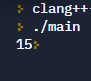

NIVEL 1
LIBRERIA
Lo primero que vamos a aprender es la libreria, esto nos permite la entrada y salida de datos, ademas esto es demasiado importante para que nuestro progrmama en C++ este con constante entrada y salida de datos
Sintaxis
#include < iostream >
PRIMERA FUNCIÓN
Esto nos sirve para almacenar todo el código del progrmama que queremos ejecutar
Sintaxis
int main(){
CadenaDeCodigo
return 0
}
Este elemento siempre debe ir al final de la función, ya que esto indica que la ejecución del código ha llegado a su fin y se ha ejecutado correctamente.
IMPRIMIR EN PANTALLA
Esto sirve para indicar las cosas que se vean en pantalla durante la ejecución del programa pueden ser cadenas de textos, números, sumas, entre otros
Sintaxis
main int(){
sdt :: cout<<"Texto";
return 0;
}
Ejemplo
int main(){
std :: cout<< "Hola Mundo";
return 0;
}
TIPOS DE DATOS BÁSICOS
Son los datos que vamos a utilizar para nuestro programa, pueden ser números, decimales, valore booleanos (true o false), listas, etc.
Sintaxis
int main(){
int NombreDeLaVariable = 15 //Este es el dato que se utiliza
en un número es entero
float NombreDeLaVariable = 32.7 //Este es el dato que se utiliza
en un número decimal
double NombreDeLaVariable = 52.75824 //Este dato se utiliza cuando
el decimal es demasiado extenso
char NombreDeLaVariable = 'a' //Este dato utiliza caracteres, es
decir, solo se puede poner una solo letra entre '' o
puede ser un número pero este tambien tiene que ir dentro
de ''
return 0;
}
Esto es una variable, basicamente es un valor que le damos a un elemento cuando queremos almacenar un dato, el valor puede ser el que nosotros queramos
Ejemplo
int main(){
int numero = 15; //Acabo de nombrar el número entero en una
variable, ahora vamos a imprimir la variable en el programa
std :: cout<< numero; //Ponemos el nombre de la
variable que vamos a ejecutar
return 0;
}


operación

LECTURA O ENTRADA DE DATOS
Ahora veremos la forma para poder recibir datos del usuario, pedir datos al usuario, y partiendo de eso utilizar diferentes dinamicas
Ejemplo
int main(){
int numero; //Como primer paso hicimos
una variable cuyo tipo de dato es un
número entero porque inicia con int
std :: cout << "Digite un número: ";
std :: cin >> numero; //El elemento cin
es el que nos permite pedir, es decir
que el usuario pueda ingresar lo que
se le pide y pusimos la variable para que
el dato que se arrojara perteneciera a la variable
std :: cout << "Su número fue: " << numero; //Finalmente
Damos respuesta y ponemos la variable separada de <<
para mostrar el valor que fue ingresado
Utilizar esto nos ahorra muchisimo tiempo al momento de concatenar textos, por eso personalmente lo recomiendo cuando se requiera
OPERADORES
Existe dos tipos de operadores, los de comparación y los lógicos.
Operadores de comparación
Su función es comparar variables, entre otros elementos. Lo que hace es comparar por medio de unos operadores que lo que hacen es devolver un codigo booleanos(falso o verdadero), es decir si es verdadera la comparación, nos lanzara un valor verdadero y si no será falso.
A continuación te mostrare los operadores que existen
Sintaxis
document.write(var1 == var2)//Este es el operador igual, lo que hace
es que si las dos variables son iguales, nos dara un valor
verdadero o si no falso
document.write(var1 != var2)//Este es el operador desigual, lo que
hace es que si las dos variables son diferentes nos dara un valor
verdadero o si no falso
document.write(var1 === var2)//Este es el operador identico, lo que
hace es que si las dos variables son identicas, es decir,
el elemento y lo que esta dentro del elemento son iguales
nos dara un valor verdadero o si no falso
document.write(var1 !== var2)//Este es el operador no identico lo
que hace es que si las dos variables no son identicas,
nos dara un valor verdadero o si no falso
document.write(var1 > var2)//Este es el operador mayor que, lo que
hace es que si la primera variable es mayor que la
segunda nos dara un valor verdadero o si no falso
document.write(var1 >= var2)//Este es el operador mayor o igual,
lo que hace es que si la primera variable es mayor o
igual que la segunda, nos dara un valor verdadero
o si no falso
document.write(var1 < var2)//Este es el operador menor que,
lo que hace es que si la primera variable es menor
que la segunda, nos dara un valor verdadero
o si no falso
document.write(var1 <= var2)//Este es el operador menor o igual,
lo que hace es que si la primera variable es menor o
igual que la segunda, nos dara un valor verdadero
o si no falso
Operadores Lógicos
Utiliza valores booleanos para su uso, es decir, los elementos tienen que tener un resultado verdadero o falso, ya que mediante tres operadores, se puede utilizar esto.
Ejemplo
var Texto1 = true
var Texto2 = true
var resultado1 = Texto1 && Texto2//Este es el operador and,
lo que hace es comparar los dos elementos, esto es
parecido a las matematicas, aquí como los dos son true
el valor que nos va a dar es true, los mismo funciona
si los dos fueran false tambien nos devolvería true,
ya si uno fuera true y el otro false, nos devolvería un
valor false
var resultado2 = Texto1 || Texto2//Este es el operador or,
lo que hace es decir que, si la primera variable o la
segunda es true, nos devolverá un true, si las dos
son true tambien nos devolverá un true, pero si las dos
son false nos devolvera un false
var resultado3 = !Texto1//Este es el operador not, lo que hace
es cambiar el valor lógico de la varibale, es decir,
en este caso la variable es true, al momento de
utilizar este operador cambiaría de valor a false,
lo mismo pasaría si la varibale fuera false, cambiaría
a true
CONDICIONALES
Los condicionales, es la ejecución de un bloque de codigo solo si se cumple una condición. ¿Cúales son esas condiciones?
IF
Esta es la primera condición, lo que hace es que, si la operación es verdadera, me va a ejecutar el código
Sintaxis
if (operación){
cadena de codigo a ejecutar
}
Para esto nos sirve los operadores que vimos anteriormente, los operadores lógicos o los de comparación y recuerda que para que se ejecute el bloque de código, el resultado de la operación tiene que ser verdadera
Ejemplo
if (15 < 45){
alert("Prueba de if")
}//Como vemos la operación es verdadera asi que este
bloque de código procedera a ejecutarse
ELSE IF
Esta condicion va despues de un if, es decir, si el primer bloque de código es falso, quiero que se ejecute el siguiente
if (operación){
cadena de codigo a ejecutar
}
else if (operación){
cadena de código a ejecutar
}
ELSE
Esta condicion es para finalizar la fila de condiciones, es decir esta es la que va despues del else if o cuando ya sea ultima condición.
if (operación){
cadena de codigo a ejecutar
}
else (operación){
cadena de código a ejecutar
}